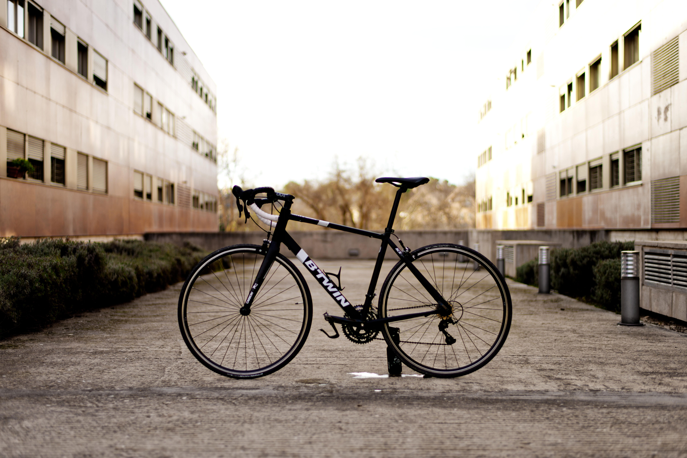
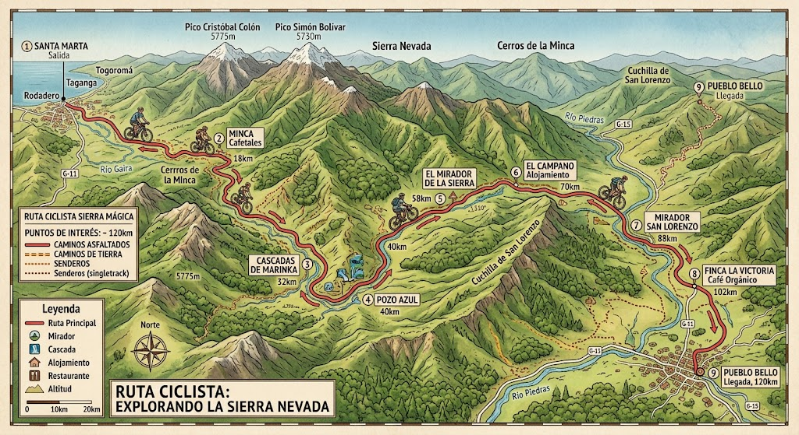

¿Quiénes somos?
Somos una empresa apasionada por el ciclismo y el turismo local, dedicada a conectar a las personas con la ciudad y la naturaleza de una manera activa, sostenible y divertida. Nuestro objetivo es ofrecerte todo lo que necesitas sobre ruedas, ya sea que busques explorar por tu cuenta, vivir una experiencia guiada inolvidable o mantener tu propia bicicleta a punto. Creemos en un servicio cercano, seguro y de alta calidad para que cada rodada sea una gran experiencia.
Nuestros servicios
Ponemos a tu disposición una oferta completa diseñada para amantes de la aventura y la movilidad urbana:
Equipamiento incluido
Incluye cascos y candado, elementos reflectantes
Bicicletas idealespara paseos urbanos, rutas recreativas o trayectos diarios. Tenemos opciones para todos los niveles.

Recoridos guiados
Descubre los mejores rincones, historias y paisajes de la mano de guías expertos que te llevarán por rutas seguras y llenas de encanto.
Taller básico: Servicio de mantenimiento preventivo, ajustes rápidos, reparación de pinchazos y puesta a punto para que tu bicicleta siempre ruede con total seguridad.

Cómo alquilar
- Elige tu servicio: Selecciona si deseas alquilar una bicicleta, unirte a uno de nuestros recorridos guiados o utilizar nuestro taller.
- Reserva tu fecha: Contáctanos o agenda de forma directa indicando el día y la duración que prefieras.
- Personaliza tu experiencia: Te entregamos el equipo ajustado a tus necesidades y te damos las últimas recomendaciones.
- Disfruta del recorrido: ¡Súbete a la bicicleta, explora y vive la aventura al máximo! Al finalizar, solo devuélvela en nuestro punto acordado.
- Equipamiento incluido: Cada alquiler incluye los elementos esenciales de seguridad (como cascos y elementos reflectantes) para que disfrutes con total tranquilidad.
- Flexibilidad y tarifas accesibles: Opciones por horas, días completos o paquetes especiales adaptados a tus planes.
Encuéntranos
Estamos siempre cerca de ti para atenderte y comenzar la próxima aventura:
- Dirección: Guayabal
- Horarios de atención: Lunes a Domingo de 9 a 5
- Teléfono / WhatsApp: 8000400011
- Correo electrónico: ruedalibre@example.com
- Redes sociales: Síguenos en Instagram y Facebook como @ruedalibre para ver fotos de las rutas y enterarte de nuestras próximas salidas.